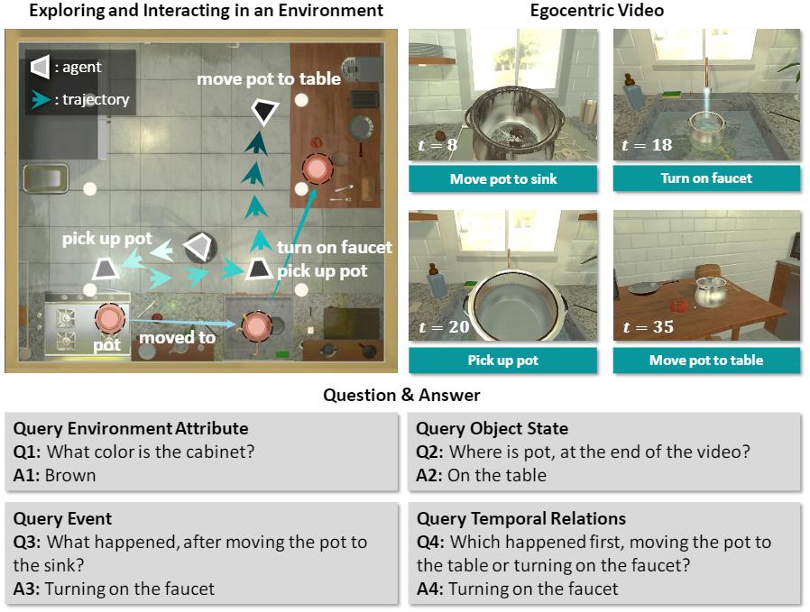
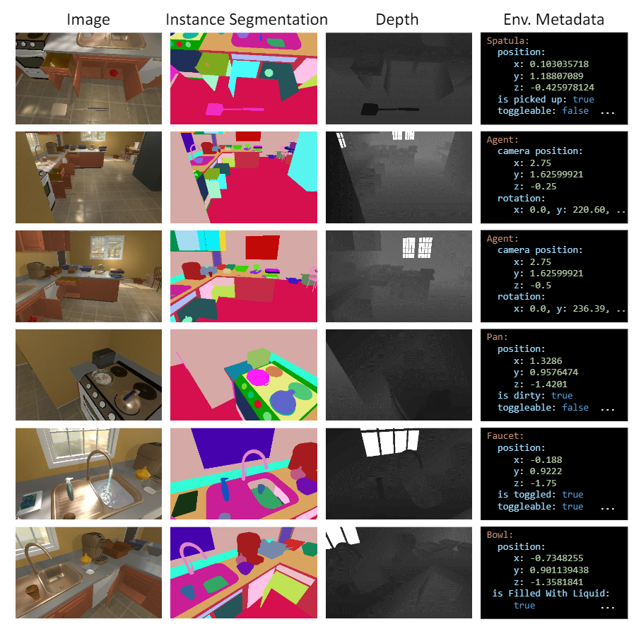

Env-QA: A Video Question Answering Benchmark for Comprehensive Understanding of Dynamic Environments
Overview

Visual understanding goes well beyond the study of images or videos on the web. Env-QA is a new video QA dataset to evaluate the ability of understanding the composition, layout, and state changes of the environment presented by the events in videos.
Statistics
- 23.3K videos collected in AI2-THOR simulator
- 85.1K questions
- Rich additional annotations, e.g., instance segmentation, depth image, and environment meta data.

Download
-
Videos: Download env-qa_video.zip and env-qa_video.z01 to *.z07. Then, in windows, you can directly unzip env-qa_video.zip to obtain 4.7K long videos; or in Ubuntu, you may need to first merge them into one zip file by command "zip -F env-qa_video.zip --out env-qa_video-merged.zip" (directly use unzip command may cause errors here), then unzip the merged file. We futhur split part of them to generate in a total of 23.3K videos. The video split results are recorded in env_qa_video_annotation_v1.json .
-
Questions: We also privide diverse questions in env_qa-questions.zip.
-
Video features: We use Faster-RCNN fine-tuned on the AI2-THOR images to extracted object features of each frame. You can download the env_qa_objects.h5 to get the features.
To access the dataset, please send an email to Dr. Wang and Dr. Gao. When we receive your email, we would provide the download link to you.
Evaluation
Every answer in Env-QA can be mapped into the role-value format. Then, the accuracy of the predicted answer can be calculated as an IoU-like score of the predicted values and the ground-truth values.
Citation
@inproceedings{Gao_2021_ICCV,
title={Env-QA: A Video Question Answering Benchmark for Comprehensive Understanding of Dynamic Environments,
author={Gao, Difei and Wang, Ruiping and Bai, Ziyi and Chen, Xilin},
journal={Proceedings of the IEEE/CVF International Conference on Computer Vision (ICCV),
month={October},
year={2021},
pages = {1675-1685}
}Contact
-
Ruiping Wang, Institute of Computing Technology, Chinese Academy of Sciences
-
Difei Gao, Institute of Computing Technology, Chinese Academy of Sciences